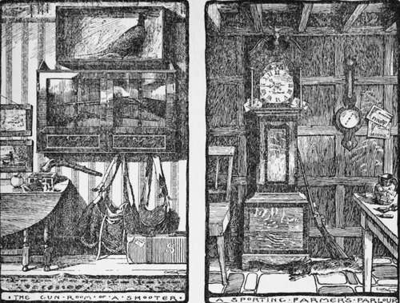

Chapter I. Beginning To Shoot And The Management Of The Gun
Description
This section is from the book "Horses, Guns, And Dogs", by J. Otho Paget, George A. B. Dewar A. B. Portman, And A. Innes Shand. Also available from Amazon: Horses, guns and dogs.
Chapter I. Beginning To Shoot And The Management Of The Gun
What has become of the gun the gardener's boy used to shoot the poll-jays with when they came after the peas ? It was the first gun I fired off. It seems a long time since the days of that gun. When you think of such days and try to tell of them, it is hard to help writing in such a way that people may be led to suppose you are quite old. It is possible to be quite young, to feel even younger than you actually are, until you go back to the first rabbit you snared or shot, the first blackbird's nest you knew of, the first butterfly you netted ; then you do begin to feel a little antique. So many things have happened since then, so many fresh interests have come crowding into a man's life, so many new friends made, and—that it should be so !—so many old friends lost. I have a wretched memory for many things, but that first gun is un-forgetable. It was unquestionably Brummagem. It was a single-barrel, a long barrel that was not by any means straight. A friend, whom I was telling about this gun the other day, said, " By Jove ! not straight ? I shouldn't have cared to shoot with it. How was it that it didn't burst?" Frankly, I should not care to let that gun off to-day, unless I were to see a shot or two fired safely with it by somebody else just before. But that is because I have since grown quite accustomed to straight barrels made of harder material. The gun was safe enough when properly loaded, and its killing power was remarkable when you held it straight. Of course it was a muzzle-loader. In our parts breech-loaders were by no means general then. My tutor used to hire a pin-fire breech-loader then, and pot rabbits with it as they sat out in the rides in summer nibbling the grass. The pin-fire, I should say, is deader to-day by far than the old muzzle-loader; it had, perhaps, one advantage—it was very easy to tell when it was loaded. Now it was sometimes rather a nice point whether or not the keeper's muzzle-loader was charged. If at the end of the day there remained a charge in the gun, this was commonly not drawn ; the trigger was gently let down upon the cap, and the gun hung up or set in a corner. So, until you had pulled back the trigger of the muzzle-loader in the corner, you might not be able to tell for sure whether it was loaded or not. Cases did occur, moreover, in which the cap was removed and the charge left undrawn, and then you might only be able to say for certain whether the gun were loaded or unloaded by probing with the ramrod.
Hence accidents occurred from time to time— to put it mildly—with these old guns. There was the case of one man in our parts who loaded or unloaded without taking the cap off the nipple— gamekeepers, for instance, had often a great objection to wasting a good cap—the gun "went off," and sent the ramrod through the centre of his hand. On the whole the old muzzle-loader in the corner of the parlour of a neighbouring farmer— an old friend of mine whom I shall speak more of presently—was a thing to handle circumspectly. Once it had been in its corner, loaded, for many weeks. At length it was taken out in view of a day's shooting. The question was what would happen when it was fired ? I have a dim recollection that somebody fastened it into a gate and pulled a bit of string attached to the trigger—a precaution against a possible bursting of the barrel.
Then there was the second gun I shot with. The first, as related, was a single-barrel, and I seem to remember that it passed hands for about thirty shillings about the time of my acquaintance with it. The second was a double-barrel, belonging to the gamekeeper whom my brother employed when he wanted a more active man than our old family retainer, who had long filled the place, to rear the pheasants. It was altogether a more important weapon, and I found it rather heavy. I believe I potted a rabbit or two with that gun when the keeper would let me have some shots. Once or twice I enticed the keeper to let me have a few shots at ferreted rabbits. But, after I had missed two or three rabbits bolted by the ferret, he grew impatient, and talked about wasting time and powder. My impression is I did not get much sport out of that gun. It was better fun using the saloon pistol, but the wonder now is how we never did grievous injury to somebody with that pistol. As we never seemed to go near hitting birds on the trees or sitting rabbits with the saloon pistol, we grew quite careless in using it. It was not bad fun putting a bullet now and then through the lead of the tower which held the bell over the stables : you could see the little round hole the bullets made there, and there was some satisfaction in this.
Before we leave the muzzle-loading guns of my boyhood, a word as to ammunition and method of loading. There is no doubt that the old powder-flask was rather an ingenious contrivance ; the sound of the shot rattling down the barrels, too, was attractive. Wads were quite in the nature of luxuries. We used to load with scraps of newspaper, white or brown, in place of wads, whilst, at a pinch, leaves, green or dead, would serve.
These experiences with the muzzle-loaders belong to very early gunning days—to the time when I could only expect a stray shot now and then, and when the gardener's boy was not weeding rather than poll-jay-openly or rabbit-on-the-sly shooting, or when the keeper was in a good-natured mood. They are odds and ends pertaining perhaps more to the bird-nesting and the catapulting period than to the gunpowder and shot. I did not, as it were, graduate a gunner till a year or two later, when my brother got a new central-fire breech-loader,and gave his old one to me. Then all at once I was fairly in the thick of it. My gun was a twelve-bore central-fire with rebounding hammers, which—being short of ready money—I parted with long before it was worn out.
I used to take that gun about with me to places, and at times when there was little chance of shooting. I took it to college, for instance, and kept it proudly in my rooms. It was only used twice there, and neither occasion redounded in the least to my credit. Once after dark, for a lark, I fired it between quads—pointing well up into the air of course, in the direction of Christ Church Meadows —the idea of myself and my conspirators being to "draw" the "dons." It made a fearful noise among the stone buildings, and the smoke from the black powder hung about suspiciously near my rooms; but curiously enough no don would be drawn that night. The other time I used it was at a trap shooting-match, and very feeble sport that was : you don't care for sport with captive creatures ; it is not the real thing.
Continue to:
- prev: Various Hints In Riding And Driving. Part 9
- Table of Contents
- next: Beginning To Shoot And The Management Of The Gun. Part 2